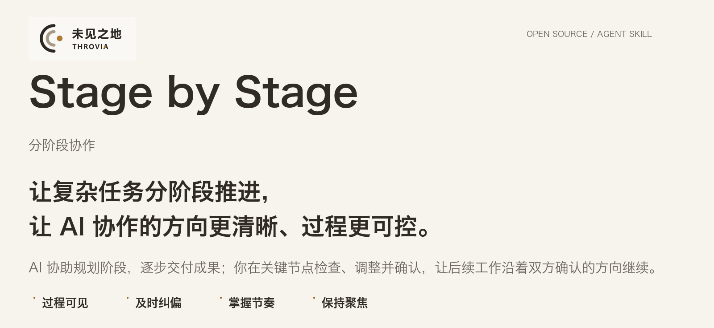
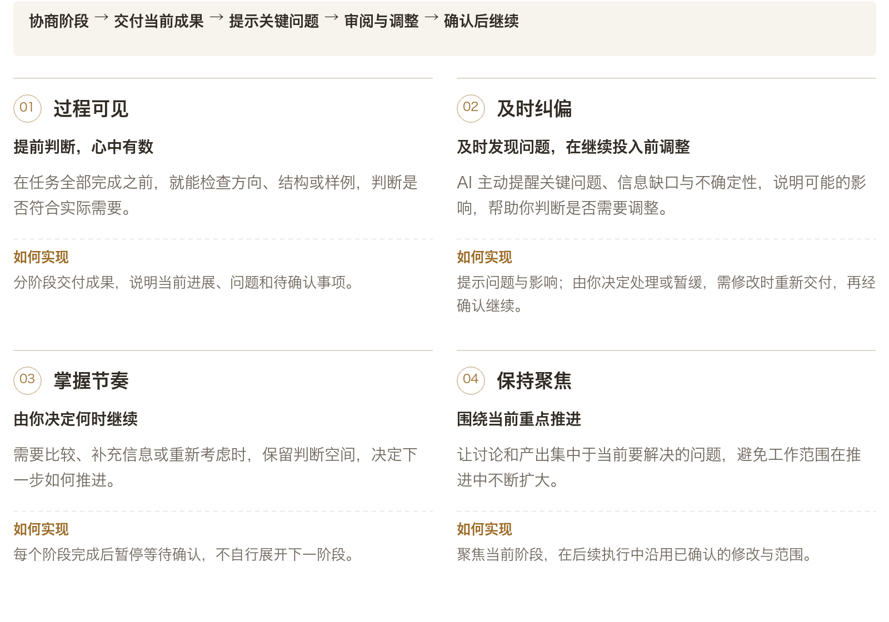
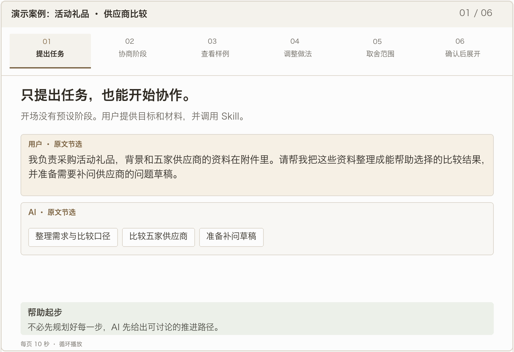

核心价值 · 适用场景 · Demo 演示 · 安装教程 · 快速开始 · 常见问题 · English
你知道最终需要什么，却未必已经想好每一步怎么做。
Stage by Stage 让 AI 先提出阶段安排，再按确认后的计划执行。
通过查看阶段成果，你可以及时调整做法与范围，并决定何时进入下一阶段。
01 / 核心价值
让你的判断，真正影响后续工作。
从看到成果，到调整方向，再到决定如何继续。

还没想好怎么分阶段？ AI 会先提出安排，供你审阅和调整；已有计划，也可以直接沿用。
02 / 适用场景
当任务需要你的判断，而不只是更多产出时。
尤其适合前后相互依赖、前一步没确定就可能带来后续返工的工作。
03 / Demo 演示
从一个采购任务，到一份经你确认的比较结果。
五家礼品供应商，数量、预算和交期都要兼顾。先确定推进方式，再把两家样例改合适，最后展开全部五家。

六页循环播放，每页 10 秒。依据试跑对话的节选与摘要整理。
这段演示的价值：AI 帮你开始规划；你通过阶段成果调整做法、决定范围，再让它带着这些决定继续。
04 / 安装教程
两种安装方式，按你的习惯选择。
可以手动放置文件夹，也可以在终端使用命令行安装。
点击按钮只会下载 ZIP，不会自动安装。
同一文件包可供 Windows 和 macOS 使用，前提是电脑上已有支持 Skill 的 AI 工具。解压后，任选下面一种方式完成安装。
A · 手动安装下载 → 解压 → 放入对应文件夹
如何找到目录、检查有没有放对？macOS：访达按 最终路径应为 |
B · 命令行安装在终端从 GitHub 仓库安装 需要 Node.js 22.20 或更新版本，并联网运行 Skills CLI。在 macOS 终端或 Windows PowerShell 中执行所用工具对应的命令，无需手动下载 ZIP。 终端 · 安装到 Codex 终端 · 安装到 Claude Code 按所用工具选择一条命令。 工具官方说明：Codex Skills ↗ · Claude Code Skills ↗。以上为本地个人安装；云端、网页端按各自的导入方式处理。 |
05 / 快速开始
带上一项任务，就可以开始。
准备目标、已有资料和关键约束，不必预先写好全部阶段。
Codex · AI 对话框 · 不是终端命令
$stage-by-stage
Claude Code · AI 对话框 · 不是终端命令
/stage-by-stage
Codex CLI 或 IDE 扩展也可输入 /skills 后选择；Claude Code 在对话中输入斜杠指令，再描述任务。其他界面使用其提供的 Skill 选择入口。
一条任务输入示例
请使用 stage-by-stage 帮我整理这次活动的供应商比较。
我会提供需求和供应商资料，重点关注数量、总预算和到货时间。请先提出阶段安排，和我确认后再开始。
以上仅为示例，也可根据自己的任务自行修改尝试。
已经有自己的阶段安排，可以直接提供；Skill 会沿用已确认的计划。
06 / 常见问题
直接说“分步骤做，每步等我确认”，不就可以了吗？
简单任务可能足够。
Stage by Stage 把划分阶段、交付成果、提醒问题、落实修改和确认后继续整理成可复用规则，方便在不同任务中保持一致的协作方式。
我不知道该分几步，也能使用吗？
可以。
AI 先提出简短的阶段建议，说明每一步交付什么、需要你判断什么；你可以调整，确认后再开始。已有安排则直接沿用。
每一步都要确认，会不会反而增加负担？
阶段围绕方向、选择、样例等影响后续工作的成果设置，不把每个小动作都变成审批。
你可以调整阶段，也可以明确取消暂停要求。
AI 提醒的问题，必须全部解决才能继续吗？
不必。
你决定现在处理还是暂缓。暂缓事项仍会保留限制；如果某个缺口确实使后续工作无法可靠完成，AI 应说明受影响的部分与继续所需条件。
与其他规划、分阶段执行类 Skill 有什么区别？
可以按你当前最需要的帮助来选择。
以下比较规则侧重点，不代表其他 Skill 没有相近能力。
Skill 你现在希望…… 主要侧重点 Stage by Stage 有人协助规划，在看见阶段成果后作判断，并让后续工作沿着确认的方向继续。 协商阶段；交付可审阅成果并提醒关键问题；落实修改、等待确认；保持当前聚焦并继承已定范围。 Planning with Files ↗ 长任务跨多轮或中断后，仍能找回计划、发现与进度。 以文件保存计划、发现和执行状态，支持上下文延续与任务恢复。 Phase-Gated Workflow ↗ 让软件工程任务按明确阶段推进，在进入下一阶段前审核批准。 以研究、设计、审查、实施、验证五种工程模式组织工作，设置阶段批准要求。 对比依据为所链接的项目公开说明，非实际效果排名。
与 Task Brief 有什么区别，需要搭配使用吗？
Task Brief 帮你明确当前该解决什么、做到什么程度；
Stage by Stage 帮你分阶段交付、审阅和推进。两者可独立使用；目标和范围尚不清晰时，也可以先用 Task Brief 对齐。
如果 AI 还是提前执行，或没有落实修改，怎么办？
指出当前阶段和未确认的内容，要求先修正当前成果，并检查 Skill 是否已加载。
若反复出现，保留相关对话用于反馈。
Skill 提供协作规则，实际执行仍受模型和所用工具影响。
07 / 反馈与 THROVIA
如果它帮到了你，欢迎 Star、分享与交流。
为项目点一个 Star，方便下次找到，也让更多人发现它。使用中有问题或新的想法，欢迎交流与反馈；分享对话时，请先移除敏感信息。
欢迎在 Issue 中说明任务、相关回复与后续结果，也可以关注 THROVIA 的 X 获取使用案例和项目动态。

Brenda Shi · THROVIA
发布方：上海未见之地科技有限公司。
SKILL.md · Changelog · MIT License · Brand usage
Skill 指令及文档采用 MIT 许可；名称、Logo 和品牌图片的使用范围见品牌说明。
Copyright (c) 2026 Brenda Shi · THROVIA.